第 6a 讲：学习型角色动画（续）——从运动模型到 PFNN 与生成模型
把“角色下一步怎么动”写成概率模型，用自回归网络和相位混合专家把运动预测变成可训练、可控制的实时动画。
◆ 学完这一讲，你应该能
能说清运动模型 \(p(X)\) 与条件分布 \(p(X|z)\) 在角色动画里分别对应什么
能用条件概率链式法则把整段运动的概率拆成逐帧预测的乘积
能写出自回归模型 \(x_t=f(x_{t-1};z)\) 的训练目标与梯度下降更新式
能解释“歧义问题”为什么需要隐变量，以及 PFNN 用相位参数解决歧义的做法
能区分混合专家、加权混合专家与 PFNN 相位插值三者的区别
能列举 VAE、GAN、Normalizing Flow、Diffusion 四类生成模型在运动生成中的基本思路
核心结论速记
运动模型就是对“一段运动是否自然”建模：\(p(X)\) 越大越自然，控制参数 \(z\) 给定时变成条件分布 \(p(X|z)\)。
整段运动的概率可用链式法则拆成 \(p(x_1)\prod_t p(x_t|x_{t-1},\dots;z)\)，这是自回归建模的数学基础。
马尔可夫假设把无限历史压成上一帧：\(x_t=f(x_{t-1};z)\)，网络只学“一步转移”。
只用 \(x_{t-1}\) 预测 \(x_t\) 会有歧义（同一帧可能对应多种下一步），需要隐变量 \(z\) 提供额外信息。
PFNN 把 \(z\) 取为相位 \(\phi\) 加控制参数 \(c\)，用相位在多个专家网络参数间做 Catmull-Rom 插值，得到随步态周期平滑变化的网络。
生成模型（VAE/GAN/Flow/Diffusion）从噪声 \(z\sim\mathcal{N}(0,I)\) 出发，学习映射 \(f(z)\) 去逼近真实运动分布。
011. 为什么要把运动当成概率分布来学
传统角色动画靠状态机、混合树和手工调参：走、跑、跳每个状态各做一段，切换靠条件。问题是状态一多，组合爆炸，而且“自然不自然”很难用规则写清楚。 \n这一讲的出发点很朴素：给一堆示例运动，让模型学会“什么样的运动是自然的”。课件里把一段运动记作 \(X=(x_1,\dots,x_T)\)，每一帧 \(x_t\) 是一个高维向量（根节点平移、各关节旋转等），示例运动服从某个未知分布 \(p_X\)。所谓学习运动模型，就是用一个带参数的函数去逼近这个分布。 \n这里有两个层次：
- 无条件分布 \(p(X)\)：只判断“这段运动自然吗”，可以用来做去噪、补全。
- 条件分布 \(p(X|z)\)：给定控制参数 \(z\)（比如目标速度、朝向、风格），生成对应的运动。 \n工程上我们几乎总是要后者：玩家按手柄，你得让角色按意图动，而不是随机播放一段自然运动。所以课件后面反复出现 \(p(X|z)\) 和它的确定性版本 \(X=f(z)\)。 \n直觉上，这相当于把“动画师脑子里的运动规律”压缩进一个网络：输入当前状态和意图，输出下一帧。难点在于运动是时序的、高维的、多模态的（同一状态下可以有很多合理动作），这三点决定了后面所有模型设计。
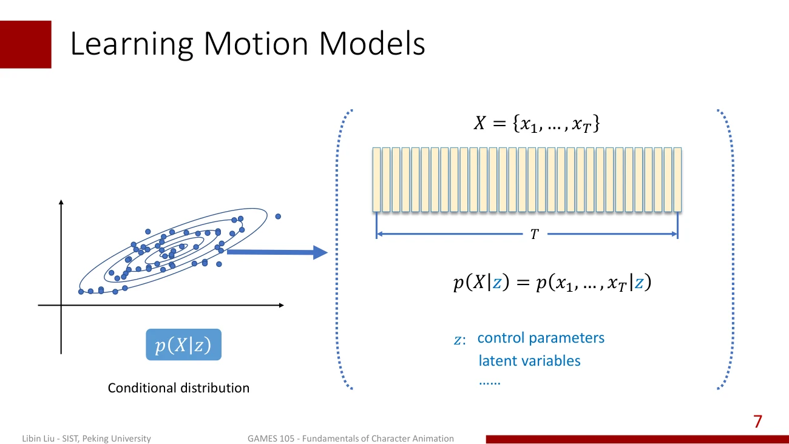
补充说明
本讲不展开具体网络结构细节，重点是建模思路；PFNN 的工程实现见后续讲次。
常见坑
把 \(z\) 只理解成“玩家输入” → 忽略了它也可以是隐变量/相位等内部状态 → 看 PFNN 时会困惑 \(z\) 为什么是相位。
以为学 \(p(X)\) 就能直接控制角色 → 无条件采样无法响应输入 → 实际系统必须用条件分布或确定性映射。
UE / Unity 落地
UE 的动画蓝图状态机/混合空间本质是手工的 \(X=f(z)\)，\(z\) 是速度和方向；学习型模型是用数据拟合同一个映射。
Unity 的 Animator Blend Tree 对应“连续控制参数到动画”的查表，PFNN 可以看作可学习的、高维的 Blend Tree。
022. 从整段运动到逐帧预测：链式法则与马尔可夫假设
直接对整段 \(X\) 建模维度太高（\(T\) 帧 × 每帧几十维）。课件用条件概率链式法则把它拆开： \[ p(X|z)=p(x_1|z)\prod_{t=2}^{T}p(x_t|x_{t-1},\dots,x_1;z) \]\n意思是：整段运动的概率 = 第一帧的概率 × 每一帧在给定历史下的条件概率。这样建模对象就从“一整段”变成“一步转移”。 \n但历史仍然无限长。于是引入马尔可夫假设（Markov Property）：下一步只依赖上一帧， \[ p(x_t|x_{t-1},\dots,x_1;z)\approx p(x_t|x_{t-1};z),\qquad x_t=f(x_{t-1};z) \]\n这就是自回归模型（Autoregressive Model）：把上一帧喂给网络，输出下一帧，再把输出当作下一时刻的输入，滚动生成。 \n注意两个工程后果：
- 误差累积：训练时用真实上一帧，推理时用自己预测的上一帧，分布不一致（exposure bias），长序列容易漂移。
- 信息瓶颈：只给一帧，网络看不到速度、步态阶段等历史信息，这正是后面“歧义问题”的根源。 \n课件在 P14–P17 把这条推导线完整走了一遍：从 \(p(X|z)\) 到乘积形式，再到 \(x_t=f(x_{t-1};z)\)，最后落到马尔可夫简化。理解这条线，后面 PFNN 加相位、生成模型加隐变量，都是在补“一帧不够”这个洞。
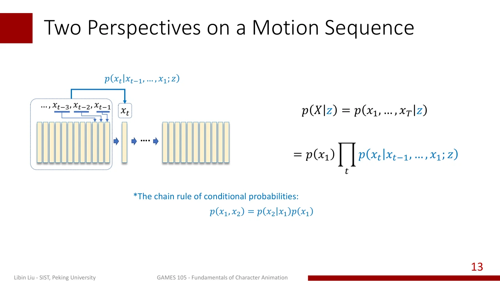
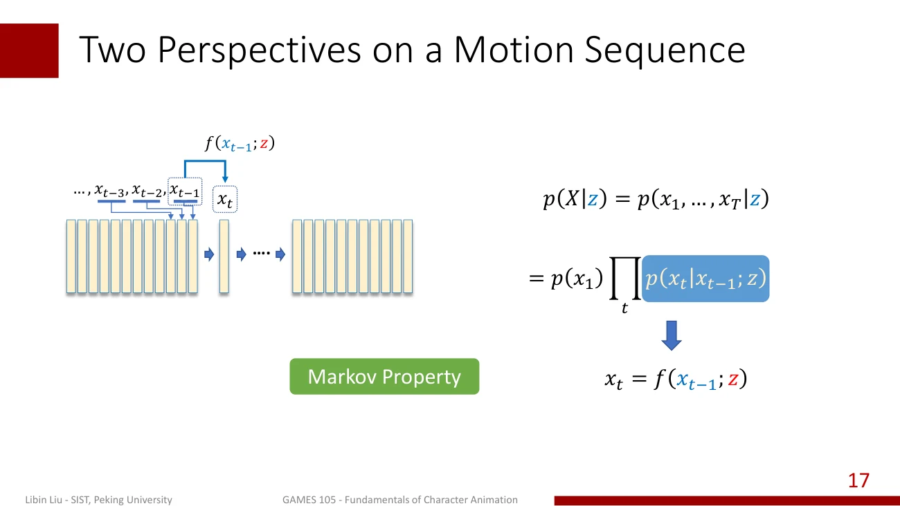
常见坑
把马尔可夫假设当成“事实” → 它只是近似，角色运动有周期性，一帧确实不够 → 需要额外隐变量或历史窗口。
训练和推理输入分布不一致 → 长序列漂移、抖动 → 训练时加入预测帧作为输入（scheduled sampling）或加噪声。
UE / Unity 落地
UE 的 Motion Field / 距离匹配（Motion Matching）用历史窗口而不是单帧，正是为了绕开一帧马尔可夫的信息瓶颈。
Unity 的 ML-Agents 做步态控制时，观测里通常包含上一帧速度和相位，等价于给 \(x_{t-1}\) 补充历史。
自回归滚动生成的伪代码（python）
x = x0\nfor t in range(T):
x = f(x, z) # 用自己上一帧的输出作为下一步输入
frames.append(x)033. 怎么训练这个一步预测网络
有了 \(x_t=f(x_{t-1};\theta)\)，训练就是标准的监督学习：从示例运动里切出大量相邻帧对 \((x_{t-1},x_t)\)，让网络输出逼近真实下一帧。课件给出的损失是平方误差之和： \[ F(\theta)=\sum_{(x_{t-1},x_t)}\big\|f(x_{t-1};\theta)-x_t\big\|^2 \]\n参数 \(\theta\) 包括所有层的权重矩阵 \(W\) 和偏置 \(b\)。优化用随机梯度下降（Stochastic Gradient Descent, SGD）：每步随机抽一小批样本，用反向传播算近似梯度，然后 \[ \theta\leftarrow\theta-\alpha\nabla_\theta F(\theta) \]\n其中 \(\alpha\) 是学习率。 \n课件在 P25–P30 先铺垫了“为什么用神经网络而不是插值”：查表插值只能拟合已有样本点，无法泛化到没见过的输入组合；多层网络 \(y=\sigma(b+W\sigma(b+W\sigma(b+Wx)))\) 能逼近复杂的非线性映射。 \n工程上要注意：
- 损失用 MSE 等价于假设噪声是高斯分布，对应“平均动作”，会抹掉多模态，这正是下一节歧义问题的来源。
- 帧间旋转要用合适的表示（四元数/旋转矩阵），直接对欧拉角做 MSE 会在 ±180° 附近出问题。
- 学习率、批大小、归一化对收敛影响很大，角色运动数据通常要先做根节点对齐和尺度归一化。
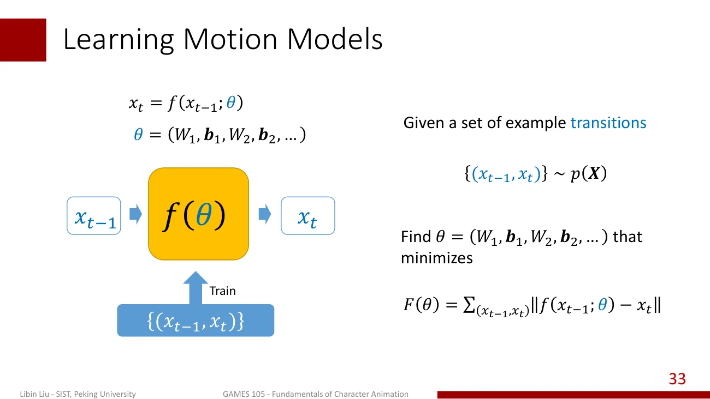
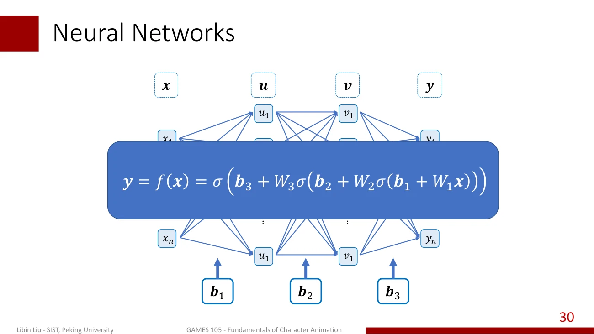
补充说明
课件用平方误差讲原理；实际项目常加正则、用 Adam 等自适应优化器，但更新式结构相同。
常见坑
直接对欧拉角做 MSE → 角度回绕处误差爆炸、动作抽搐 → 改用四元数或旋转矩阵并做合适归一化。
学习率过大 → 损失震荡不收敛 → 先小学习率跑通，再用学习率预热/衰减。
数据未对齐根节点 → 网络把“世界位置”也当运动学，泛化差 → 训练前把根节点平移到原点、朝向对齐。
UE / Unity 落地
UE 的 Neural Network Engine（NNE）可以在运行时跑 ONNX 推理，训练通常在 PyTorch 完成后导出。
Unity 的 Barracuda/ Sentis 支持导入 ONNX 做运行时推理，思路与课件“训练离线、推理在线”一致。
SGD 训练循环骨架（python）
for batch in loader: # 采样 (x_prev, x_next)
pred = f(batch.x_prev, theta)
loss = ((pred - batch.x_next) ** 2).sum()
loss.backward() # 反向传播
theta -= lr * theta.grad # SGD 更新044. 歧义问题：一帧输入不够，需要隐变量
只用 \(x_{t-1}\) 预测 \(x_t\) 会遇到歧义（Ambiguity）：同一个当前姿态，下一步可能是继续走、转弯、停下、起跳。课件 P35–P39 用同一张图反复追问“\(x_t\) 到底是哪个？”，说明这是一个多模态问题。 \n用 MSE 训练时，网络会把多个合理答案平均掉，得到一个“既不像走也不像停”的中间姿态，表现为滑步、抖动。 \n解决办法是引入隐变量（Hidden Variables）： \[ x_t=f(x_{t-1};z) \] \(z\) 携带“当前处于什么意图/阶段”的信息，把多模态拆成多个条件单模态。 \n关键问题是 \(z\) 从哪来：
- 如果 \(z\) 是玩家输入（速度、方向），它能消除“去哪”的歧义，但消除不了“步态进行到哪”的歧义。
- 如果 \(z\) 是模型内部状态（如相位），它能告诉网络“现在处于步态周期的哪个位置”，从而消除周期歧义。 \nPFNN 的选择是把两者合起来：\(z_t=(c_t,\phi_t)\)，\(c_t\) 是控制参数，\(\phi_t\) 是相位（phase），取值在 \([0,2\pi)\) 内循环，表示步态周期走到哪。这是本讲从“通用自回归”转向“角色动画专用模型”的关键一步。
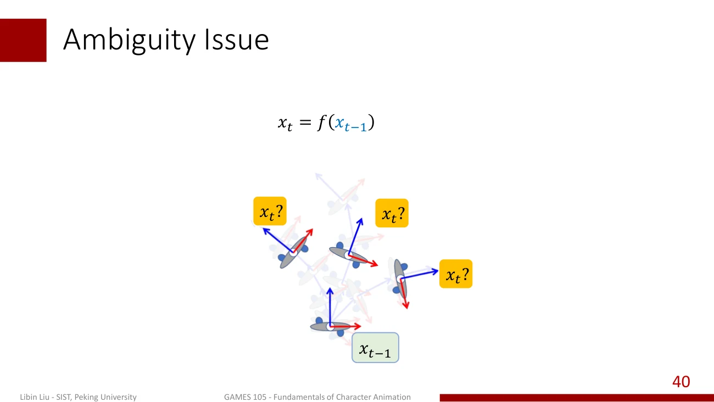
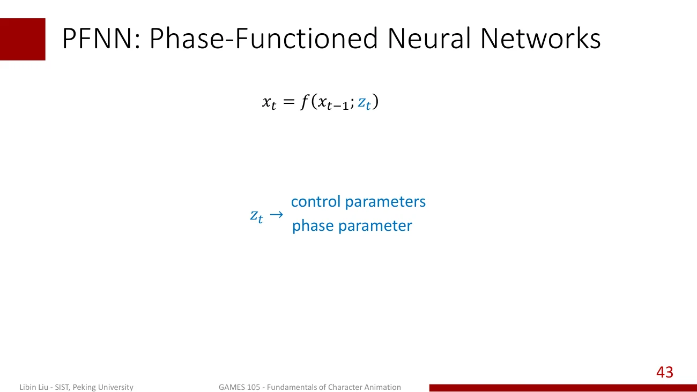
常见坑
把歧义当成“网络不够大” → 加大网络仍然平均化 → 本质是多模态，必须加隐变量或换损失（如混合密度网络）。
相位 \(\phi\) 不随速度调整 → 快走时步频对不上，脚底打滑 → 相位推进速率要与根节点速度/步长关联。
UE / Unity 落地
UE 的 Blend Space 用速度二维坐标做混合，本质上也是给系统一个“隐变量”来消歧。
Unity 的 Animator 参数（Speed、Direction）扮演 \(c_t\) 的角色，但相位需要额外脚本维护。
055. 混合专家与 PFNN 的相位插值
有了相位 \(\phi\)，怎么让网络随相位变化？最直接的想法是混合专家（Mixture of Experts, MoE）：训练 \(N\) 个专家网络 \(f(x;\theta_i)\)，输出加权和 \[ y=\sum_i w_i\,f(x;\theta_i) \]\n但这样每帧要跑 \(N\) 个网络，实时成本高。 \n课件给出更省的做法——加权混合专家（Weighted-Blended Mixture of Experts）：不混合输出，而是先混合参数 \[ y=f\Big(x;\sum_i w_i\theta_i\Big) \]\n只跑一次前向。PFNN 正是这样： \[ \theta_t=\sum_i w_i(\phi_t)\,\theta_i,\qquad x_t=f(x_{t-1};c_t,\theta_t) \]\n其中 \(w_i(\phi_t)\) 由相位决定，且用三次 Catmull-Rom 样条插值，保证 \(\theta_t\) 随 \(\phi\) 连续、平滑地变化（课件 P49 给出样条公式）。 \n为什么用样条而不是线性插值？因为线性插值在控制点处导数不连续，相位跨过控制点时网络参数会“拐弯”，表现为动作一顿。Catmull-Rom 保证一阶连续，过渡自然。 \n这套设计把“步态周期”编码进了网络参数：相位 0 附近是左脚支撑，\(\pi\) 附近是右脚支撑，参数随相位平滑变形，等价于一个由相位驱动的、连续变化的网络。
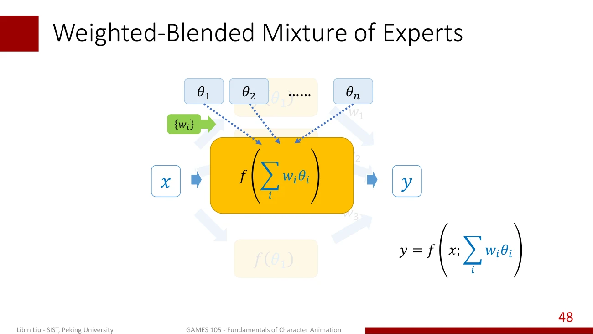
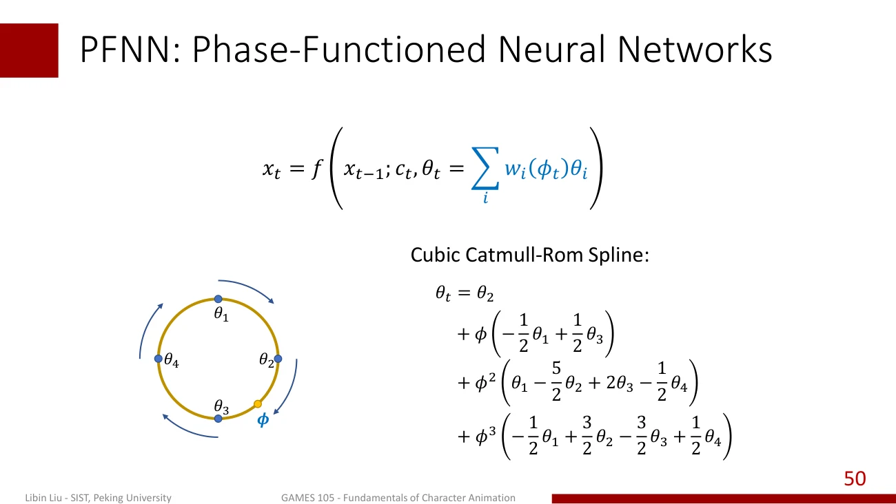
补充说明
课件 P51–P55 还提到用 Gating Network 学习权重（后续 SIGGRAPH 工作），思路是把固定相位权重换成可学习门控。
常见坑
用线性插值混合参数 → 控制点处导数不连续、动作卡顿 → 改用 Catmull-Rom 或其它 C1 连续样条。
专家数量太少 → 相位分辨率不够，步态细节丢失 → 通常 4–8 个专家，按步态关键姿势布置。
相位与控制参数耦合不当 → 转向时相位不跟脚 → 相位推进速率由根节点速度驱动，而不是固定角速度。
UE / Unity 落地
UE 的 Pose Asset / Blend Space 是“混合姿势”，PFNN 是“混合网络参数”，概念对应但层次不同。
Unity 没有内置参数混合，需要在 C# 里对 ONNX 模型权重做插值或训练多个子模型切换。
相位驱动的参数插值（示意）（python）
def blend_theta(phi, thetas):
w = catmull_rom_weights(phi, len(thetas)) # C1 连续权重
return sum(wi * ti for wi, ti in zip(w, thetas))
\nx_next = f(x_prev, c, blend_theta(phi, thetas))066. 生成模型：从噪声到运动
自回归模型给的是确定性映射 \(x_t=f(x_{t-1};z)\)，生成模型则直接学分布 \(p(x)\)，从随机噪声采样出运动。课件把主流做法归为四类，共同点是：先定义 \(z\sim\mathcal{N}(0,I)\)，再学一个映射 \(f(z)\) 去逼近真实数据分布。
- 变分自编码器（Variational Autoencoder, VAE）：编码器把运动压到隐空间，解码器 \(f(z)\) 重建；损失含重建项和 KL 正则，保证隐空间接近高斯。
- 生成对抗网络（Generative Adversarial Network, GAN）：生成器 \(f(z)\) 造假，判别器 \(g(x)\) 判真伪，二者对抗训练。
- 归一化流（Normalizing Flows）：用可逆变换 \(f\) 把高斯映射到运动分布，可精确算似然；课件引用 MoGlow 做运动合成。
- 扩散模型（Diffusion Models）：正向逐步加噪，反向学去噪，从纯噪声逐步还原运动；课件引用 MotionDiffuse、MDM 做文本驱动生成。 \n和自回归的关系：生成模型也可以条件化，写成 \(p(X|z)\)，\(z\) 是控制信号（文本、目标轨迹）。区别在于自回归逐帧滚动、生成模型一次（或迭代）出整段，前者实时友好，后者多样性强但慢。 \n工程上要清楚：实时角色控制目前仍以自回归/PFNN 类为主，生成模型更多用于离线生成、动作补全、文本驱动预览。
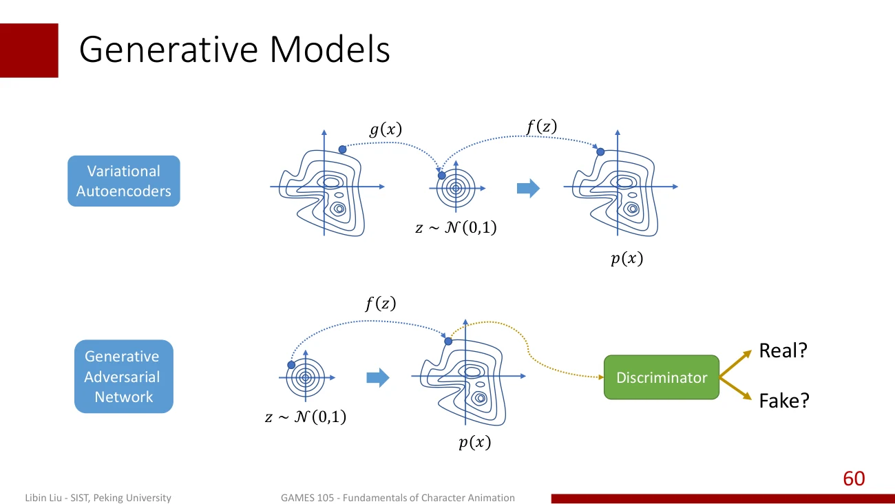
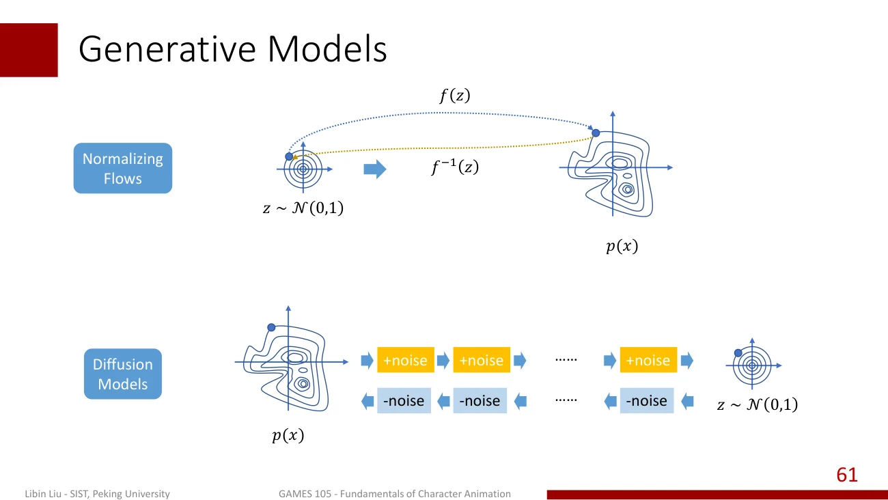
补充说明
本讲只给生成模型的分类和代表工作，不展开损失推导；后续讲次会深入。
常见坑
以为生成模型能直接替代状态机做实时控制 → 扩散模型多步去噪延迟高 → 实时场景优先自回归或蒸馏后的少步模型。
VAE 的 KL 权重过大 → 后验坍缩，生成动作单一 → 调小 KL 权重或使用 \(\beta\)-VAE 退火。
UE / Unity 落地
UE 的 Movie Render Queue 离线渲染可结合生成模型做预演，但不参与运行时逻辑。
Unity 的 Sentis 可部署小型 VAE/Flow 做动作补全，但实时控制仍建议用轻量自回归网络。
引擎对照表
| 概念 / 效果 | Unreal Engine | Unity |
|---|---|---|
控制参数到动画的映射 | 动画蓝图 Blend Space / State Machine | Animator Blend Tree |
历史窗口消歧 | Motion Matching 的轨迹历史 | 需自行维护观测历史 |
相位驱动步态 | 可在 AnimBP 中用曲线/自定义节点维护相位 | 用脚本维护相位并驱动混合 |
神经网络推理 | Neural Network Engine (NNE) / ONNX | Barracuda / Sentis |
多模态运动生成 | 离线工具链，非运行时 | 离线工具链，非运行时 |
术语双语表
| English | 中文 | 说明 |
|---|---|---|
| Autoregressive Model | 自回归模型 | 用上一帧预测下一帧并滚动生成的模型。 |
| Markov Property | 马尔可夫性质 | 假设下一步只依赖当前帧，与更早历史无关。 |
| Latent Variable | 隐变量 | 未观测到的内部状态，用来消除多模态歧义。 |
| Phase | 相位 | 表示步态周期进行到哪的循环变量，取值在 \([0,2\pi)\)。 |
| Mixture of Experts | 混合专家 | 多个子网络加权组合，权重可由输入决定。 |
| Catmull-Rom Spline | Catmull-Rom 样条 | 一阶连续的三次插值，用于平滑混合网络参数。 |
| Variational Autoencoder | 变分自编码器 | 用编码器-解码器学隐空间分布的生成模型。 |
| Diffusion Model | 扩散模型 | 通过加噪/去噪过程学习数据分布的生成模型。 |
| Stochastic Gradient Descent | 随机梯度下降 | 用小批量样本估计梯度并迭代更新参数。 |
课后练习
01 用条件概率链式法则写出 \(p(X|z)\) 的分解式，并说明马尔可夫假设做了哪一步简化。
查看答案
提示：
先写 \(p(x_1|z)\prod_t p(x_t|x_{t-1},\dots,x_1;z)\)，再把条件里的历史截断。
\(p(X|z)=p(x_1|z)\prod_{t=2}^{T}p(x_t|x_{t-1},\dots,x_1;z)\)；马尔可夫假设令 \(p(x_t|x_{t-1},\dots,x_1;z)\approx p(x_t|x_{t-1};z)\)，从而 \(x_t=f(x_{t-1};z)\)。
02 为什么只用 \(x_{t-1}\) 预测 \(x_t\) 会出现歧义？举一个角色动画中的具体例子，并说明 PFNN 如何缓解。
查看答案
提示：
从多模态角度想：同一姿态可以对应走、停、转。
同一当前帧可能对应多种合理下一步（如站立帧之后可以继续走、起步、转身），MSE 会把它们平均成不自然的中间姿态。PFNN 引入相位 \(\phi_t\) 和控制参数 \(c_t\) 作为 \(z_t\)，相位告诉网络步态周期位置，从而把多模态拆成条件单模态。
03 PFNN 的加权混合专家与普通混合专家在计算上有何区别？为什么前者更适合实时？
查看答案
提示：
比较“混合输出”和“混合参数”的前向次数。
普通 MoE 对每个专家都做一次前向再加权输出，成本随专家数线性增长；加权混合专家先对参数加权 \(\theta_t=\sum_i w_i\theta_i\)，只做一次前向，成本与专家数无关，适合实时。
04 写出 SGD 的参数更新式，并解释式中每一项的含义。
查看答案
提示：
\(\theta\leftarrow\theta-\alpha\nabla_\theta F(\theta)\)。
\(\theta\leftarrow\theta-\alpha\nabla_\theta F(\theta)\)，其中 \(\theta\) 是网络参数（各层 \(W,b\)），\(\alpha\) 是学习率，\(\nabla_\theta F(\theta)\) 是损失对参数的梯度（由反向传播计算）。
05 实践题：如果你要用 PFNN 思路做一个 UE 角色控制器，列出你需要准备的三类数据和两个运行时模块。
查看答案
提示：
数据：运动捕捉、控制参数、相位；模块：推理、相位推进。
数据：①带根节点轨迹的动捕数据；②每帧控制参数 \(c_t\)（速度、朝向）；③由步态周期计算的相位 \(\phi_t\)。运行时模块：①ONNX 推理模块（NNE）执行 \(f(x_{t-1};c_t,\theta_t)\)；②相位推进模块根据根节点速度更新 \(\phi_t\) 并做参数插值。